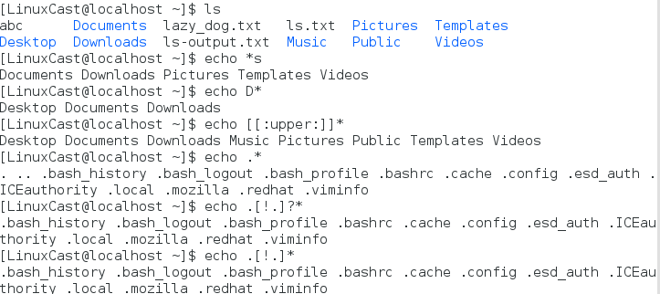

1、字符展开 *
通过展开，你输入的字符，在 shell 对它起作用之前，会展开成为别的字符
2、路径名展开 *s
通配符工作机制叫做路径名展开

ls 命令能够提供一份正确的隐藏文件清单：
ls -A
3、波浪线展开 ~
当他用在指定单词前时，它会展开成指定用户的家目录名。当它不跟任何参数时会展开成当前家目录

4、算术表达式展开
shell 允许算术表达式通过展开来执行，格式如下：
$（(expression)）
算术表达式只支持整数运算 +、 - 、 *、 / 、% （取余）、**（取幂）
5、花括号的展开

花括号的展开可以生成一系列的字符串，对于我们来说最好用的就是，创造一系列的文件或者目录，可以批量操作文件或者目录

6、 参数展开 （变量展开）

查看有效的变量列表 printenv -- print all or part of environment

7、命令替换
命令替换允许我们把一个命令的输出作为一个展开模式来使用，一个参数可能展开为很多的命令输出
file命令本身是针对单个文件的，相当于递归的执行 file 命令，直到通道内的输出结果全部执行完毕